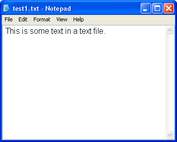
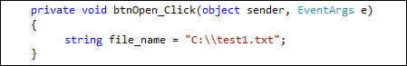
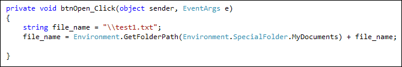
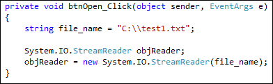
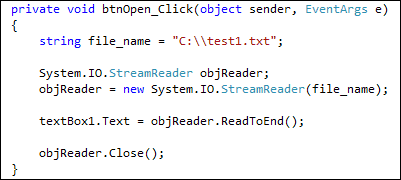
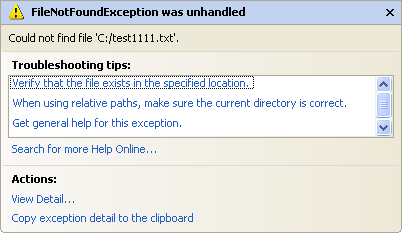
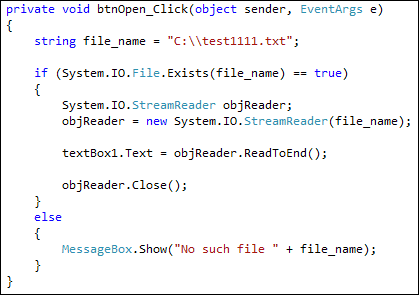

Open a Text File in C# .NET
As a programmer, you should have the ability to manipulate files. By this we mean opening and processing things like text files, html files, word docs, etc. In this section, you'll learn how to do that. First up is opening a text file.
How to open a Text File in C#
What we'll do is to open up a plain text file and insert the contents into a text box. So start a new project. Add a text box and a button to your form. Set the MultiLine property of the text box to true.
Before you double click your button, you'll need to create a text file. Use
the Windows Notepad to create the following text file:

(The Windows Notepad can be found by clicking Start > All Programs > Accessories, in both XP and Vista/Windows7.)
Save it anywhere you like, but we recommend saving to your root drive if you have XP. The file path would then be C:\test1.txt. For later versions of Windows, save it to your Documents folder. The file path would then be:
"C:\\Users\\Owner\\Documents\\test1.txt"
But you can also use this rather long line:
string fldr ="\\test1.txt";
fldr = Environment.GetFolderPath(Environment.SpecialFolder.MyDocuments) + fldr;
Once you have created and saved your text file, double click the button on
your form to get at the code. Add your file path as a string variable. Here's
the one for XP users:

And here's one for all other Windows users:

Note that we have two backslash characters (\\) in the file name. This is because if you just use one in C# it means "A special character follows". The special character IS the backslash, so you need two: one to tell C# that a special character follows, and one for the special character itself. This is known as escaping.
To open up text files, C# .NET uses something called the StreamReader. This is an inbuilt class that lives in the Input/Output namespace. (A namespace is a collection of related classes, all grouped together.) The Input/Output namespace, or IO for short, lives in the System namespace. We need to set up a StreamReader variable, so the code would be this:
System.IO.StreamReader objReader
This sets up a StreamReader variable that we've called objReader. You then create a new object with the name objReader:
objReader = new System.IO.StreamReader( file_name );
After the new keywords, we have System.IO.StreamReader again. However, after StreamReader we have a pair of round brackets. The file you want to open goes between the round brackets. For us, this was held in the variable we called file_name. Add the two lines to your code, and your coding window should look like ours below (This is the XP file_name version just so that we can have a smaller images):

Now that we have a StreamReader object, we can use its properties and methods. To place the entire contents of a file in to a text box, you can use the ReadToEnd method. As its name suggests, this reads all the contents of the file. Add this line to your code:
textBox1.Text = objReader.ReadToEnd();
Once opened, a Streamreader should be closed. This is quite simple:
objReader.Close();
After adding the close line, your code should look like this:

Run your programme and test it out. You should find that the contents of your text file appear in your text box when your button is clicked.
Stop your programme and return to your code. Change your file_name line to this:
string file_name = "C:\\test1111.txt";
In other words, just add three more 1's to the file name. Run your programme and click the button again. Unless you have a file called test1111.txt on your C drive, you should see this error message appear (Visual Studio 2012 users will see a plainer version of the error below):

You can test to see if a file exists. Again, you use the System.IO namespace. But this time you use the File class. Here's the code:
if ( System.IO.File.Exists( file_name ) = = true )
{
//OPEN FILE HERE
}
else
{
//ERROR MESSAGE HERE
}
So the line that checks to see if the file exists is this:
System.IO.File.Exists( file_name ) == true
Exists is a method available to File. Between the round brackets of Exists, you type the name of the file you want to check. After a pair of double equals signs, we're checking for a value of true.
Place the code that opens the file between the curly brackets of the IF statement. Add an error message for the else part, and we have this:

So the file gets checked to see if it exits. If it doesn't, we display an error message. If it does, the file is opened.
You can also check to see if a folder (Directory) exists. Just use Directory instead of File. Like this:
if ( System.IO.Directory.Exists( folder_location ) )
{
}
In the next lesson, you'll learn how to read a file line by line.